Studies flame behavior in conditions relevant to spacecraft.
Fire safety
Real-time orbital and atmospheric telemetry monitoring cabin materials, combustion mitigation thresholds, and space station safety compliance based on NASA open databases.
Cabin Oxygen
Cabin Oxygen
20.9
% O₂
NOMINAL
Virtual cabin sensor · demo readings only
Radiative Heat Flux
Radiative Heat Flux
1.20
kW/m²
Virtual chamber sensor · scenario limit 2.0 kW/m²
Cabin Pressure
Cabin Pressure
101.3
kPa
14 virtual nodes · no physical sensor connection
FLIGHT EVENT LOG
UTC · SIMULATION
SOLID-FUEL COMBUSTION & SMOKE RESEARCH
Explore the BASS, SAFFIRE, and SAME study records. Select a study title to expand its details and figure.
01 BASS: Burning and Suppression of Solids
BASS is a log of solid-fuel combustion tests. Each row lists the date, GMT day, run number, sample number, and fuel material. It contains 121 tests from March to August 2012 and April to June 2013.
Spheres were the most tested fuel (50 tests, 41%), followed by candles and wax (23), PMMA 1–2 cm (20), SIBAL fabric (12), PMMA slabs (8), Nomex (6), and Ultem (2). The busiest month was June 2012 (26 tests), followed by April 2013 (24).
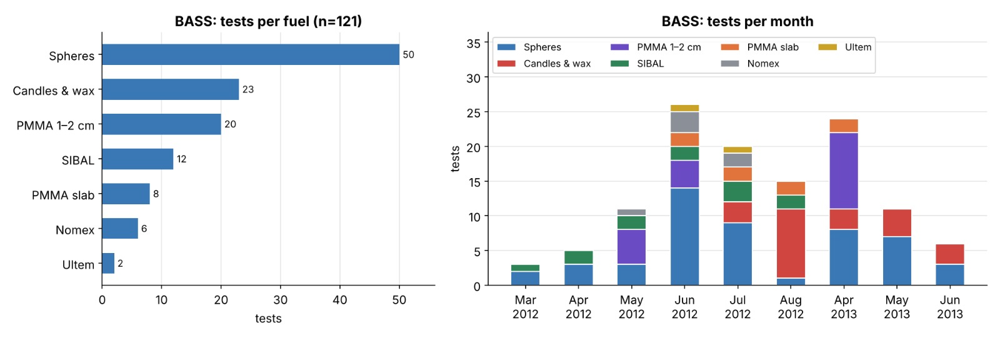
How to read it: The left chart counts tests by fuel; the right chart shows monthly counts split by material.
Limitation: This table contains no measurements. It shows which materials have experimental support and when they were tested.
02 BASS-II: gas measurements and flow settings
BASS-II follows the BASS record structure and adds gas measurements and flow settings for each test. It contains 129 tests by six investigators: T’ien (29), Olson (27), Fernandez-Pello (27), Bhattacharjee (22), Miller (20), and Ferkul (4). Almost all were run in 2014; Olson’s last three tests are from 2016.
Materials include PMMA films and slabs of different thicknesses, PMMA rods (¼, ⅜, and ½ inch), SIBAL fabric, Nomex, and wax candles. Each test records initial and final O₂, CO₂, and CO, airflow, and radiometer gain.
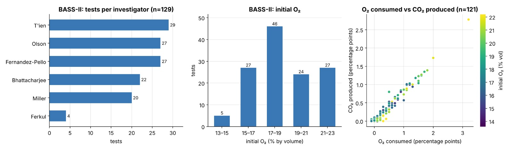
How to read it: Most tests started between 17% and 19% O₂ (46 of 129), below the 21% in normal air. In the 121 tests with complete gas readings, greater O₂ consumption is associated with more CO₂ production. The highest points are mostly from Miller and 2–5 mm PMMA slabs.
The association describes these recorded tests; it does not isolate a cause.
03 SAFFIRE: large-scale spacecraft fire experiments
SAFFIRE (Spacecraft Fire Safety Experiment) studies large fires in orbit. Samples are ignited with airflow either concurrent (in the direction of flame spread) or opposed.
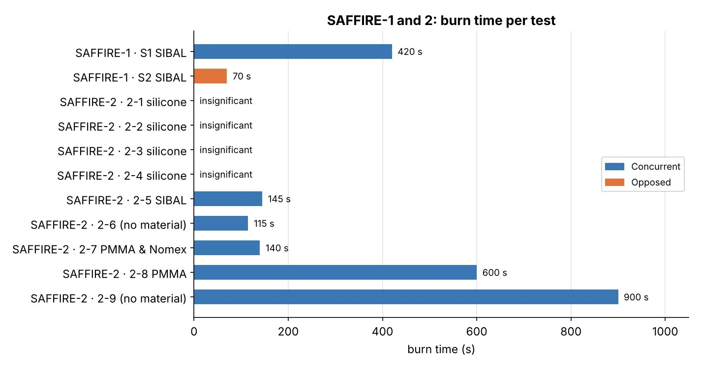
In SAFFIRE-1, the concurrent SIBAL test burned for 420 s versus 70 s for the opposed-flow test. In SAFFIRE-2, four silicone samples did not sustain combustion. In long PMMA tests, the flame stayed anchored at the base, with a slow regression rate of 0.01–0.04 mm/s.
SAFFIRE-1 and SAFFIRE-2 are not directly comparable because their samples have different sizes.
04 SAME: Smoke Aerosol Measurement Experiment run plan
SAME measures smoke produced by each material. This table is the initial run plan; entries marked pending are not completed measurements.
| Sample | Material | Air flow (cm/s) | Weight loss (mg/min) | Aging (min) |
|---|---|---|---|---|
| 1 | Teflon | 5 | 2 | 1 |
| 2 | Teflon | 5 | 1 | 1 |
| 3 | Teflon | 5 | 2 | 20 |
| 4 | Teflon | 10 | 2 | 1 |
| 5–8 | Kapton, silicone rubber, lampwick, and dibutyl phthalate | Same conditions as samples 1–4 | Pending | Pending |
05 SAME-R: smoke records and aerosol aging
SAME-R is the detailed log of SAME runs from July to September. It contains 109 records for five materials: Kapton (29), silicone (22), lampwick (20), Pyrell (20), and Teflon (18). Runs used inlet velocities of 0, 1, 2, and 8.1 cm/s.
| Material | Rt/R0 range | Fresh net aging (s) | Aged net aging (s) |
|---|---|---|---|
| Kapton | 1.38–1.48 | 34 | 578 |
| Silicone | 1.304–1.36 | 45 | 873 |
| Lampwick | 1.245–1.28 | 39 | 526 |
| Teflon | 1.445–1.452 | 33 | 600 |
| Pyrell | 1.22–1.23 | 45 | 678 |
Each material operates within its own Rt/R0 range; only Kapton and Teflon ranges overlap. Net aging rises from 33–45 s in fresh runs (11 s primary aging) to 526–873 s in aged readings, with the longest aged time for silicone. Zero- and low-flow runs were also aged to study ventilation effects.
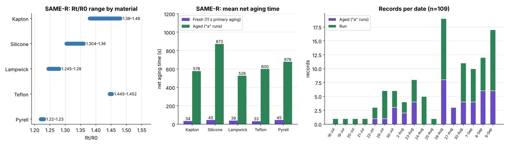
How to read it: The panels summarize material-specific Rt/R0 ranges, fresh versus aged mean net aging, and records by date.
PSI COMBUSTION EXPERIMENT ARCHIVE
01 What is in the archive: eight datasets, about 1,600 records

What it shows: How many records each dataset in the PSI repository contributes. The three blue bars are the ACME campaigns flown on the ISS: BRE (194 flames ignited), CLD Flame (344) and s-Flame (276), 814 flames in total. The other datasets are SPICE (151 unique flames), CFI (87 tests), Flame Design (207 runs), and CFI-G (179 normal-flame tests and 154 inverse-flame tests).
How to read it: The bars do not share a unit: ACME counts flames ignited, SPICE counts unique flames, and CFI, Flame Design and CFI-G count tests or runs. Compare orders of magnitude, not quality.
The right panel shows SLICE (PSI-106), the oldest campaign: 12 test days between February and March 2012, using methane, ethylene and ethane diluted with nitrogen, plus a final day with propane.
02 ACME: three campaigns, 814 flames ignited in orbit
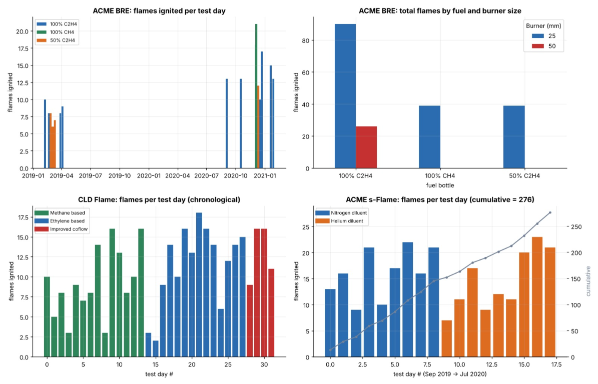
What it shows: ACME (Advanced Combustion via Microgravity Experiments) is the largest combustion series in this set of ISS experiments. The top-left panel shows BRE (Burning Rate Emulator) by date and fuel, with a gap between April 2019 and September 2020 and an intense campaign in late 2020.
The top-right panel summarizes BRE by fuel and burner size: 116 flames with pure ethylene, 39 with methane and 39 with 50% ethylene. A 25 mm burner was used on 16 of the 18 test days and a 50 mm burner on 2. The bottom-left panel orders the 32 CLD Flame test days in three blocks: methane, ethylene and an improved coflow design. The bottom-right panel shows s-Flame: 9 days with nitrogen as diluent (145 flames) and 9 with helium (131 flames), with the gray line giving the cumulative total of 276.
How to read it: Bar height is the number of flames ignited that day. Helium did not raise the daily ignition count (14.6 per day on average vs. 16.1 with nitrogen), so the figure should not be read as a helium advantage.
03 CFI: pressure and oxygen conditions explored with dodecane
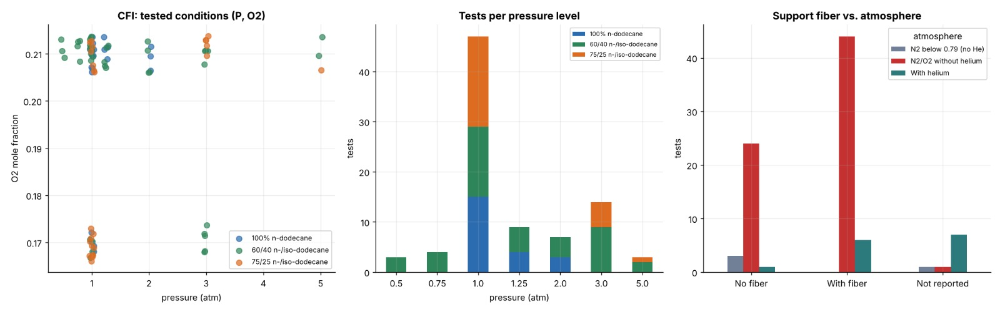
What it shows: CFI gathers 87 tests run between March and June 2017 with n-dodecane, pure or mixed with iso-dodecane (22 tests with pure fuel, 24 with a 75/25 mixture and 41 with a 60/40 mixture). Every test used one of two oxygen levels, 17% or 21%, at pressures from 0.5 to 5 atm; points are slightly jittered so they do not overlap. The center panel counts tests per pressure level, with 47 at 1 atm and 14 at 3 atm. The right panel crosses support-fiber use with the atmosphere.
How to read it: “N₂/O₂ without helium” groups all mixtures without helium (21/79 and 17/83). “N₂ below 0.79 (no He)” is a group of 4 tests whose nitrogen fraction is below 0.79 and that contain no helium. The table does not say what makes up the rest of the gas. The 14 tests with helium are a minority, and the high-pressure levels (3 and 5 atm) have too few tests to support firm conclusions on their own.
04 Flame Design: adiabatic flame temperature vs. flow and dilution

What it shows: Flame Design contains 207 runs over 14 test days, 187 with ethylene and 20 with propane. Of these, 60 are ramps, in which the flow changes during the run, so they have no single flow value and do not appear in the first two panels. The left panel plots adiabatic flame temperature (Tad) against fuel flow for steady runs. The center panel plots it against Zst, the mean stoichiometric mixture fraction, with color showing how diluted the fuel is. The right panel counts runs per test day, separating steady runs from ramps.
How to read it: In the center panel, Tad drops as Zst rises, which in this table happens as the fuel is diluted more. Runs with nearly pure fuel (yellow) reach about 2830 K. On average, propane gives a higher Tad than ethylene (about 2632 K vs. 2425 K).
05 CFI-G: when a flame ignites, how long it lasts and how it ends

What it shows: CFI-G compares two geometries, normal flames (fuel inside) and inverse flames (oxidizer inside), using ethane, propane and butane. The upper-left panels plot Tad against oxygen fraction, with red for tests with hot ignition and gray for the rest. Normal flames cluster around 21% O₂ and between 35% and 40%, while inverse flames span 12% to 85%. The upper-right panel shows how each test ended: in normal flames 102 self-extinguished, 31 ended when the flow stopped and 46 are not reported; in inverse flames the counts are 81, 58 and 15.
The lower-left panel compares flame duration by fuel: the highest medians are for ethane (about 51 s in normal flames at 30%, 48 s in inverse flames) and the lowest is propane at 30% in normal flames (5 s), with outliers up to 304 s. The lower-center panel relates pressure to mean duration. The lower-right panel counts the colors of inverse flames: 59 blue, 29 at the limit (no visible flame), 20 yellow-blue and 10 yellow.
How to read it: Hot ignition is more common at high Tad, but there are exceptions in both directions. In the pressure panel, inverse flames drop from about 55 s at 0.5 bar to about 18–20 s between 2 and 3.5 bar, while normal flames show no clear trend (80 s at 0.5 bar, 37 at 1, 57 at 2 and 2 at 3 bar, the last with only 12 tests). Each point mixes different fuels and oxygen levels, so pressure cannot be isolated as the cause.
NASA PSI FLAMMABILITY RESEARCH
Select a study title to expand its findings, study parameters, and figure.
01 Soot (PSI-60)
Without gravity, flames are longer, wider and about 230 K cooler, and they produce much more soot.
- Methane peak local soot volume fraction: about 2× (range 1.8–2) in 0g vs. 1g.
- Acetylene at 100%: 3×; acetylene at 50%: 4×.
- Ethylene total soot: 6.5× (range 5–8).
- Fuel-flow test cases: 1.2, 1.6 and 2.2 mg/s (4.32, 5.76 and 7.92 g/h), plus a baseline preheated to 160 °C (433 K). Ethylene-acetylene cases use an expected 4× soot factor.
Monte Carlo inputs: Soot scaling factors use truncated normal distributions: acetylene 100% (μ = 3, σ = 0.3), acetylene 50% (μ = 4, σ = 0.4) and ethylene (μ = 6.5, σ = 0.75).
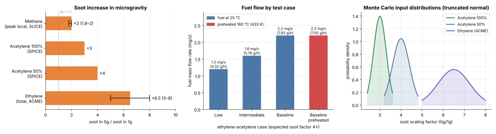
Soot increase, fuel-flow cases and sampled scaling factors
02 Smoke and Aerosols (PSI-115)
Particle size distribution: Smoke particles follow a lognormal distribution, and most are smaller than 500 nm. In 0g smoke does not rise, so it ages in place through coagulation and condensation for 10–1,800 s.
Characteristic diameters: D10, D32 and mass median diameter are computed from geometric mean diameter (Dg) and geometric standard deviation (σg) with Hatch–Choate relations. For silicone (Dg = 240 nm, σg = 1.7), the mass median diameter rises to about 560 nm.
Test time scales: Igniter activation 15–60 s; pyrolysis event 120 s; smoke aging 10–1,800 s.
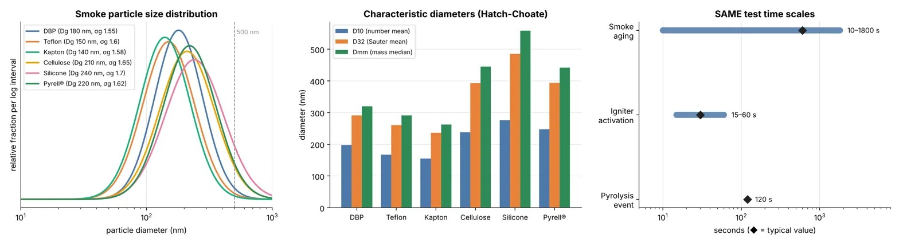
Smoke particle sizes, characteristic diameters and test durations
03 Flame Spread over Solids (PSI-62 and SAME)
SAME pyrolysis tests: Eight tests on Teflon and Kapton at 5 or 10 cm/s airflow, with a mass-loss rate of 1–2 mg/min and 1 or 20 minutes of smoke aging.
Parameter space: BASS wind-tunnel tests forced flow from 0 to 40 cm/s and oxygen from 14% to 21% (nominal: 18% oxygen and 20 cm/s). The goal is the “Goldilocks” flammability zone: too little flow and radiation quenches the flame; too much and the flame is blown off.
Sample and duct scale: BASS duct 76 × 76 mm (58 cm²); SAFFIRE-II sample 145 cm²; SAFFIRE-I sample 3,760 cm² (about 26 times larger than SAFFIRE-II). SIBAL fabric is 75% cotton and 25% fiberglass.
04 FLEX: Methanol Droplets, Burning Rate and LOI
The figure compares initial and extinction droplet diameters across five methanol FLEX tests at 1 atm and 21% oxygen; test 4 has no extinction-diameter data. The measured burning rates range from 0.48 to 0.60 mm²/s, with a mean of 0.556 mm²/s.
The right panel shows minimum oxygen fractions to sustain a flame (0g): methanol 12%, n-heptane 15%, and air as a 21% reference.
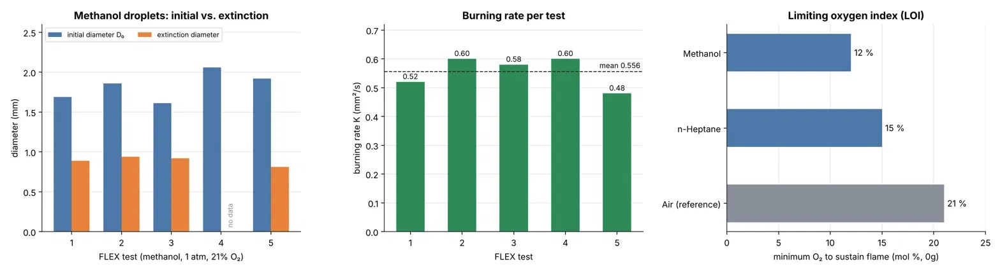
Methanol droplet measurements, burning rate and limiting oxygen index
05 Monte Carlo Parameters
The chart gives the minimum, maximum and mean (μ) for 14 variables across four studies, with normal, truncated normal, lognormal or uniform distributions. Every simulation run samples these ranges to generate thousands of possible fire scenarios.
A marker near the center indicates a symmetric distribution; a marker near an end indicates skew, as for pressure, particle diameter and fuel flow.
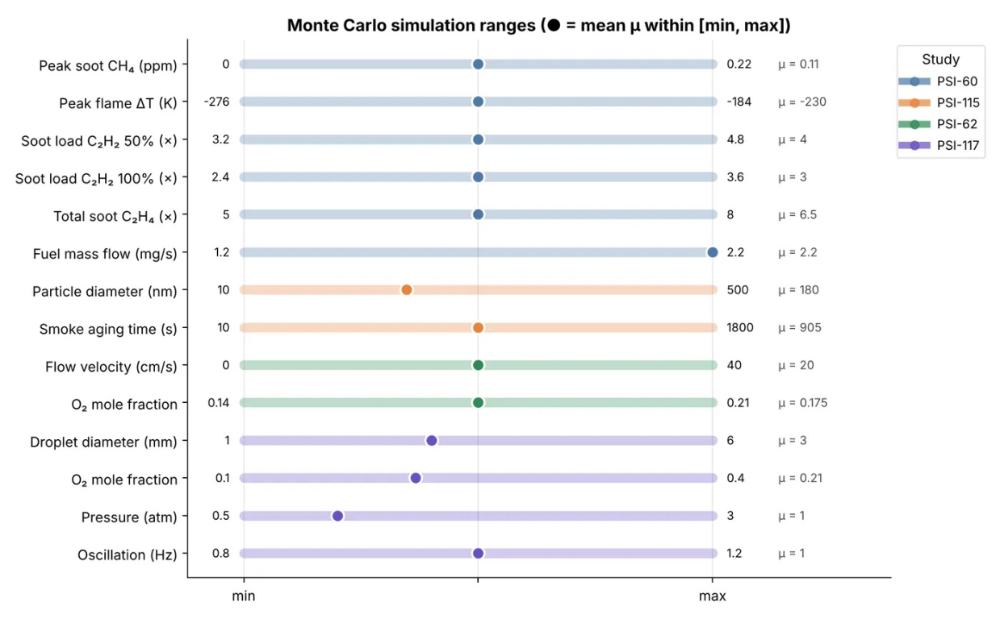
Simulation ranges and mean values across four studies
06 Research Map: The NASA PSI Studies Behind the Model
The left panel shows the active period of eight NASA Physical Sciences Informatics (PSI) investigations. Blue bars are ground-based studies (analysis, CFD and direct numerical simulation); orange bars are experiments flown on the International Space Station (ISS). The right panel shows the number of scientific publications in the reference catalog (13 total).
How the studies connect: Each ground study is validated against one or more ISS flight experiments, so every part of the model can be checked against real microgravity data.
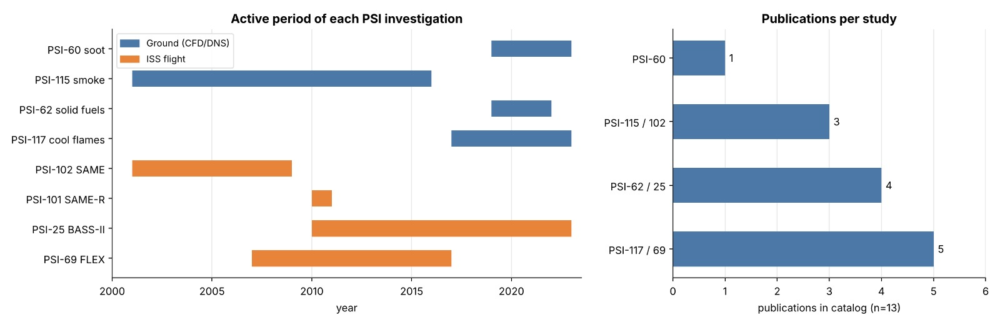
Study timelines and publications in the reference catalog
Fire Extinguisher Research
Explore how fire-suppression research studies flames in microgravity, where combustion can behave differently from flames on Earth.
01 FLEX experiment overview
The Flame Extinguishment Experiment (FLEX) investigates flame behavior and extinguishment in microgravity. The assistant below is scoped to the FLEX dataset supplied by its service, rather than the live-style telemetry elsewhere in AstroSense.
Ask the assistant to compare records for these two fuels.
Dataset size reported by the supplied FLEX chat service.
FLEX TEST CONDITIONS AND RESULTS (~1 ATM)
01 Test conditions map (~1 atm)

What it shows: Every FLEX test in this map ran at approximately 1 atm and is positioned by its gas mixture. The left panel shows CO₂ added to air; the right panel shows helium added.
How to read it: Each point is one test. The horizontal axis is the added diluent fraction (0 means only oxygen and nitrogen); the vertical axis is the initial oxygen fraction. Color indicates the outcome: red, flame extinguished; green, droplet burned completely; gray, test ended by droplet disruption. Circles are methanol and squares are heptane.
The diagonal pattern appears because adding a diluent to air automatically lowers the oxygen fraction.
Takeaway: This is the experimental design, not a result. It shows which conditions were actually tested.
02 Extinction diameter vs. oxygen
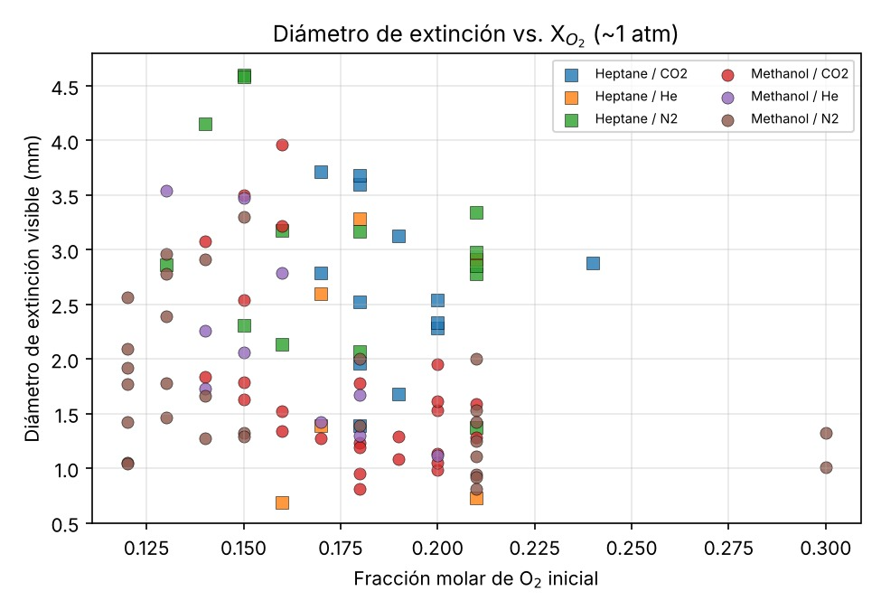
What it shows: Droplet diameter when the flame went out, for tests that ended in extinction.
How to read it: A higher point means the flame went out earlier, while the droplet was still larger. A point near 1 mm means the flame lasted almost until the droplet was consumed.
Takeaway: With less oxygen, flames tend to go out at larger droplet sizes, consistent with cooler flames and greater radiative heat loss.
Note: The scatter is large because droplets did not all start at the same size. Read this as a trend, not a precise curve.
03 Lowest oxygen with a flame observed

What it shows: For each fuel and gas mixture, the lowest oxygen fraction at which a flame was still observed. The n above each bar is the number of tests.
| Fuel | N₂ only | + CO₂ | + He |
|---|---|---|---|
| Methanol | 0.12 (n=42) | 0.14 (n=29) | 0.13 (n=14) |
| Heptane | 0.13 (n=37) | 0.17 (n=27) | 0.16 (n=12) |
Takeaway: Heptane needs more oxygen than methanol to sustain a flame in all three mixtures.
Note: These values are upper bounds on the true Limiting Oxygen Index (LOI), not the LOI itself. CO₂ and He are not ranked by suppression effectiveness here: adding them lowered oxygen in a coupled way, so the comparison mixes experimental design with suppressant effect.
This is an educational data assistant, not emergency or operational fire-safety guidance. Messages and chat history are sent to the external FLEX chat service.
Telemetry & Diagnostic Comparison Console
Choose an analysis domain to explore simulated NASA PSI parameters, scenarios, and model outputs.
Fire Safety & Spacecraft Material Thresholds
Explore simulated material flammability, flame spread, smoke generation, and cabin conditions based on PSI-98/99/100, PSI-25/26, and PSI-101/102.
Simulation only: readings and response indicators are not live sensor data, emergency instructions, or operational spacecraft guidance.
Flame-resistant meta-aramid (PSI-26 BASS): high Limiting Oxygen Index (LOI ~28%) and self-extinguishing in normal air.
LOI: 28%
Cabin Fire Detection Telemetry
Spacecraft Containment Protocol
Simulated response indicators from the supplied modelChart.js did not load, so the protocol chart is unavailable.
Material Flame Spread Monitor
IGNITION POINT0% CHARRED
Airflow ventilation speed (10–20 cm/s) governs flame spread in microgravity (SAFFIRE).
CABIN STATUS: NOMINAL
Safety Diagnostic Log
Integrity: 98%Flame Dissipation, Cooling Rates & Extinction Limits
Explore simulated droplet cooling, oxygen dilution, and cool-flame stretch extinction using the supplied PSI-69, PSI-68, and PSI-142 parameters.
Simulation only: outputs are illustrative, not live sensor readings, verified suppression advice, or emergency guidance.
Evaluates droplet extinction and thermal absorption via FLEX combustion data.
PSI-69
Dissipation & Quenching Telemetry
FLEX Droplet Quenching Efficiency
Simulated extinction responseChart.js did not load, so the dissipation chart is unavailable.
Droplet & Cool-Flame Quench
Stable spherical droplet combustion envelope in microgravity.
ACTION: MONITORING VAPORIZATION
Extinction & Quenching Log
Readiness: 100%Predictive Modeling of Flammability & Fire Scenarios
Explore simulated soot formation, flame-spread, and thermo-convective models based on the supplied PSI study parameters.
Simulation only: model outputs are illustrative and are not validated predictions, live telemetry, or emergency guidance.
Extracts temperature distributions and soot volume fractions from SPICE video telemetry.
PSI-60
Predictive Model Parameters
SPICE Optical Soot Evolution
Simulated model responseChart.js did not load, so the predictive chart is unavailable.
CFD Soot & Thermal Heatmap
SPICE optical density field: stable core with minimal soot aggregation.
MODEL STATUS: PREDICTION STABLE
Predictive Engine Log
Confidence: 94%Flame Group & Multi-Fuel Analysis
Interactive sandbox simulator evaluating cool flame stability, pressure thresholds, and suppression agents based on NASA PSI datasets (PSI-39, PSI-117, PSI-142, PSI-115).
Simulation only: outputs and suppression-agent rankings are not live sensor readings, emergency advice, or operational fire-safety guidance.
01 Fuel specimen and scenario presets
Simulate:
Standard heavy alkane (PSI-39 / PSI-117): strong NTC behavior and stable spherical cool flames in microgravity.
C₁₂H₂₆
02 Sensor telemetry simulation sliders
Chamber Pressure Ref: PSI-39
1.00 atm
O₂ Concentration Ref: PSI-142
21.0 %
Flame Temperature Ref: PSI-117 (FLEX)
680 K
DBP Aerosols Ref: PSI-115
420 p/cm³
03 Optimal suppression agent comparison
Efficiency ranked by flame regime, fuel chemistry & pressure
Ideal: Xenon (Xe)
Chart.js did not load, so the suppression chart is unavailable.
For n-Dodecane Cool Flames in microgravity, Xenon (Xe) excels due to low thermal diffusivity and high heat capacity without dispersing droplets.
04 Flame geometry and gravity
Environment:
Cluster: Cool Flame (Stable Spherical)
STATUS: COOL FLAME DETECTED
05 PSI technical log Safety Score: 84/100
Simulation events and threshold notes